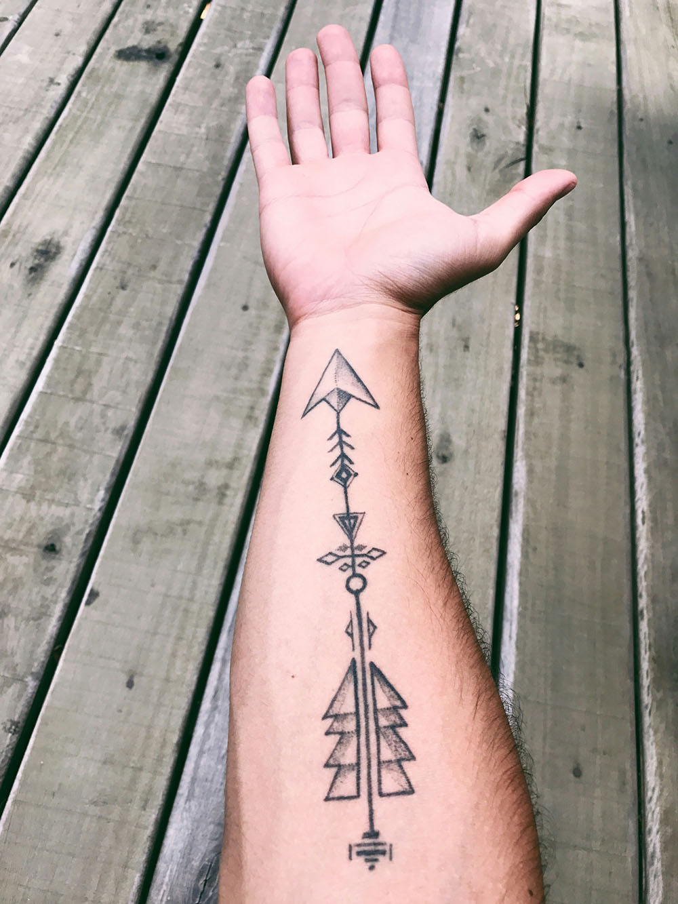
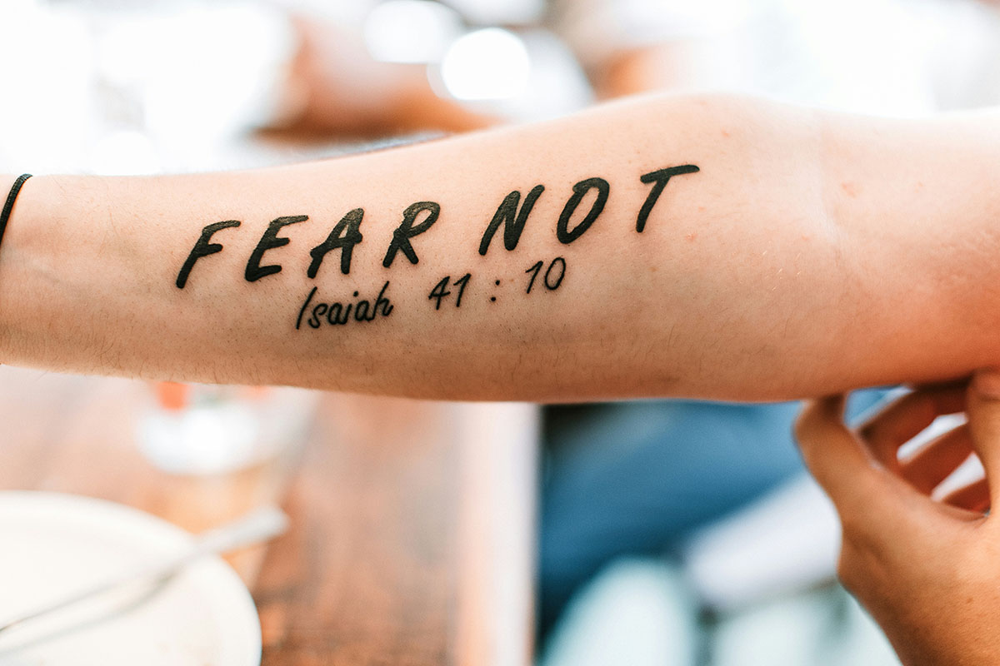
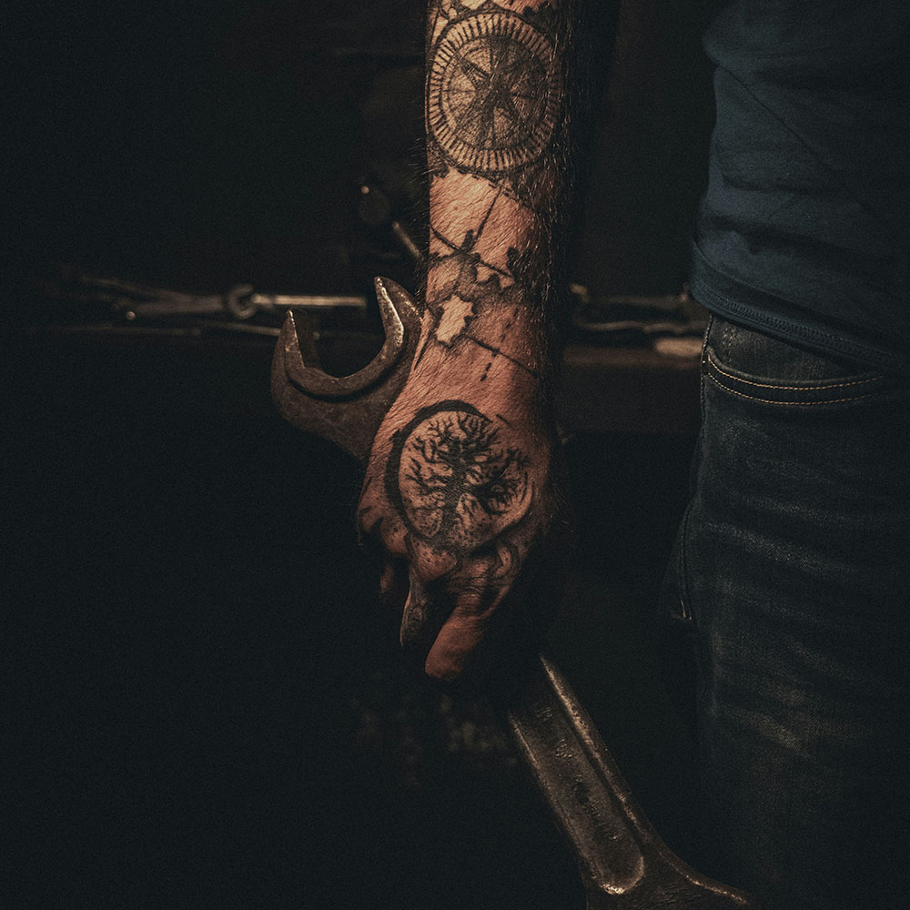
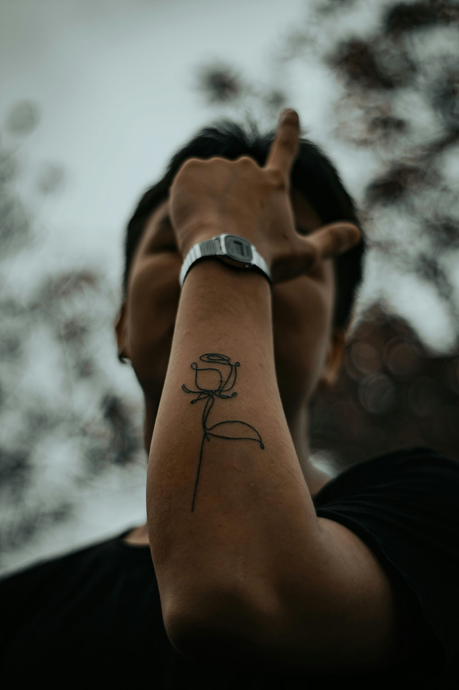

Traço Eterno
Tatoo Studio
SERVIÇOS

Bem-vindo ao Traço Eterno, onde a arte encontra a pele para contar histórias únicas e inesquecíveis. Nosso estúdio nasceu da paixão por transformar ideias em obras de arte personalizadas, respeitando a individualidade e os desejos de cada cliente. Aqui, cada traço é cuidadosamente planejado para criar um vínculo eterno entre você e sua expressão artística.
No Traço Eterno, acreditamos que uma tatuagem vai muito além da estética; ela é uma manifestação de personalidade, emoção e memória.
Serviços oferecidos
- Tatuagens personalizadas (desenhos exclusivos criados sob medida).
- Cobertura e restauração de tatuagens antigas.
- Tatuagens em estilo realista, geométrico, aquarela, minimalista, old school, entre outros.
- Aplicação de piercings com total segurança e higiene.
- Consultoria artística para ajudar a planejar seu próximo projeto de tatuagem.


